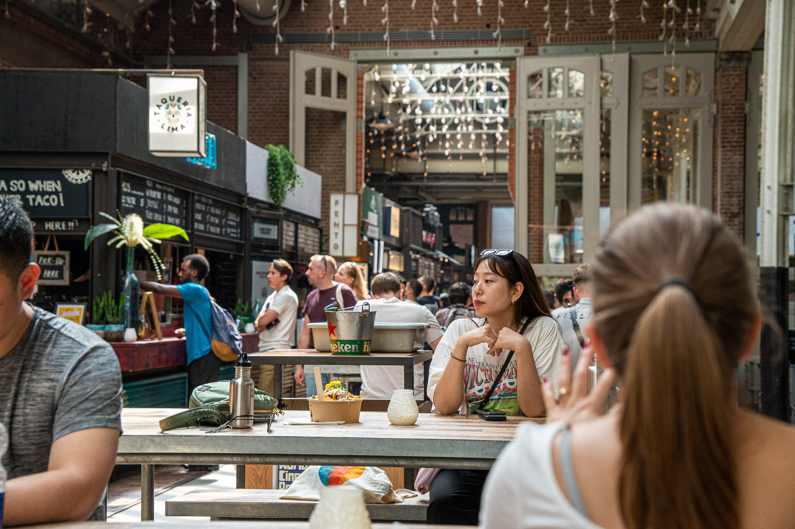
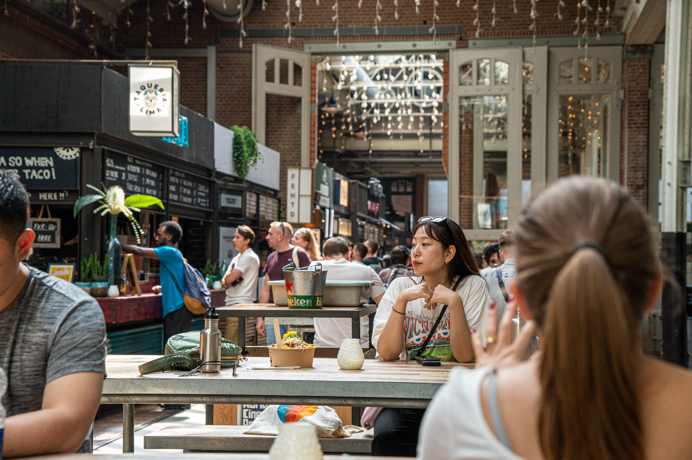
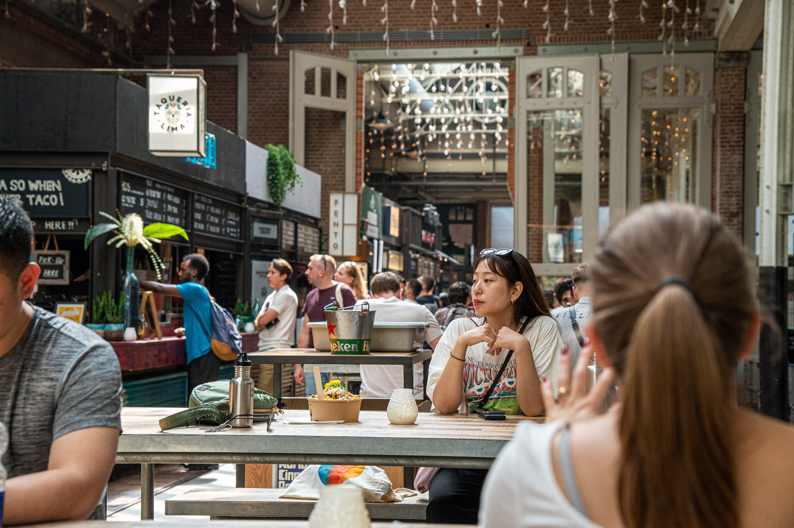

A mediados de 2023 me embarqué en un viaje por Europa en busca de restaurantes y espacios interesantes que fotografiar, con el objetivo de mejorar como fotógrafo de interiores.
Todas las fotografías aquí presentes se tomaron en el momento, con luz natural, sin el soporte de luces externas, obligándome a adaptarme y trabajar con las condiciones del momento.
